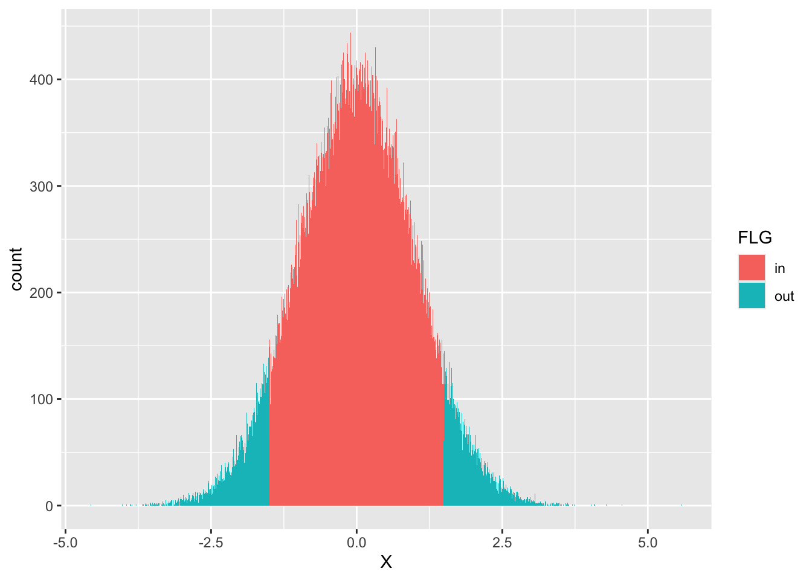

# 標準のプロット関数，curve
curve(dnorm(x), from = -4, to = 4)
In our daily life, we often use the term “probability”. For instance, when talking about the possibility of rain tomorrow, we might use probabilities like “60% chance of rain”. However, what exactly does this “60%” mean? And how is probability used in the context of statistics?
Probability is a measure of how likely something is to happen. In the case of “60% chance of rain”, it means that based on current weather data, in 60 out of 100 cases, it would rain the following day. This does not guarantee that it will rain tomorrow in reality, but rather highlights the likelihood based on existing information.
In the world of statistics, probability is extremely useful. It not only allows us to predict future events based on past data, but also helps us measure the reliability of these predictions.
In the following sections, we will look at how to calculate probability and use it in statistical analysis with R and RStudio.
Statistics and probability have a close relationship. To begin with, collecting a lot of data allows us to see overall trends that are not visible in individual cases. This is where the concept of probability comes into play to express these trends. Next, even when there isn’t much data, when it’s considered a sample extracted from a larger whole, we consider how the sample reflects the characteristics of the whole. Here, when expressing the randomness of extracting a part from the overall trend, we will use the concept of probability. Finally, even for mechanisms whose behavior is theoretically and fundamentally understood, systematic deviations or occassional errors that could only be considered accidental may occur in real and practical situations. The former can be addressed by adjusting the mechanism, but the latter requires considering the probability that these accidents will occur.
Psychology conducts research on humans, but it’s not possible to study every individual at once. Therefore, we take samples and conduct surveys or experiments (case 2). In data science, we often deal with large datasets containing tens of thousands of records. However, in psychology, it is common to only have a few or several dozen cases. Additionally, even if we can theorize and model psychological tendencies, there is a high possibility that actual behavior will contain errors (case 3). With this in mind, the data obtained in psychology can be considered as random variables, and it is used together with inferential statistics to estimate the characteristics of a population from a small sample.
In strict mathematical terms, probability is defined as the accumulation of precise concepts such as sets, integrals, and measures1. Here, rather than delving into these details, I would like you to simply understand it as “a way of expressing the likelihood of a particular outcome occurring, with a real number anywhere between 0 and 1”. From this definition, it is possible to interpret probability as “the proportion of successful outcomes out of all possible combinations”, and also as “the degree of belief related to the strength of perceived truths, weighted by one’s subjectivity.”[^6.2] You may have thought that the probability we’ve been learning so far is a dull concept - simply listing all permutations and combinations. However, it’s actually a very relatable and versatile concept, because we can treat numbers such as “eight or nine times out of ten, it’s right” (meaning we consider it about 80-90% likely) as a type of probability. As one of the key points to facilitate your understanding, it might be helpful to think of probability as an area. The concept of probability expresses what proportion of the total space of possible situations is occupied by the occurrence of an event. In other words, thinking of probability as how much of an area within all possible scenarios an event takes up (平岡 and 堀 (2009) consistently explains this in his book. This way of explanation makes it easier to understand concepts like conditional probability).
[^6.2] The former interpretation involves the probability we learn until high school, often referred to as frequency-based probability. On the other hand, the latter interpretation, as seen in daily usage like a precipitation probability of X%, is sometimes called subjective probability. While there are critics who argue these differences in interpretation are due to ideological disputes rather than mathematical reasons, in reality, Kolmogorov’s axioms are arranged to hold from either perspective. Personally, I believe that either is fine as long as users find it easy to understand and calculate.
However, it’s vital that we distinguish between a ‘random variable’ and its ‘realized value’. The values contained in a dataset or spreadsheet are indeed the realized values of a random variable, not the random variable itself. The term random variable refers to a variable in its uncertain state. A die is a random variable, and the number it lands on is a realized value of that random variable. Similarly, a psychological variable is a random variable, and any data we collect are its realized values. We come to understand the characteristics of a variable through its realized values and then use this understanding to infer the overall picture.
You may find it challenging to advance debates using abstract entities beyond the data right in front of you. In fact, everyone feels this way because understanding probability accurately is very difficult. However, through the functions implemented in computer languages like R, let’s gradually understand it more concretely and tactically by operating on it.
The realization values of a random variable follow a probability distribution. A probability distribution is an overview that shows exactly how likely each realization value is expected to occur. Typically, it is represented by a function. The names for these distributions vary depending on whether the realization values are continuous or discrete. A continuous probability distribution function is referred to as a Probability Density Function (PDF), while a discrete probability distribution function is referred to as a Probability Mass Function (PMF).
In R, several functions related to probability are prepared from the onset. For the normal distribution, which is the most well-known probability distribution, we have the following functions:
# 標準のプロット関数，curve
curve(dnorm(x), from = -4, to = 4)
# ggplot2を使ってカッコよく
library(tidyverse)── Attaching core tidyverse packages ──────────────────────── tidyverse 2.0.0 ──
✔ dplyr 1.1.3 ✔ readr 2.1.4
✔ forcats 1.0.0 ✔ stringr 1.5.1
✔ ggplot2 3.4.4 ✔ tibble 3.2.1
✔ lubridate 1.9.3 ✔ tidyr 1.3.0
✔ purrr 1.0.2
── Conflicts ────────────────────────────────────────── tidyverse_conflicts() ──
✖ dplyr::filter() masks stats::filter()
✖ dplyr::lag() masks stats::lag()
ℹ Use the conflicted package (<http://conflicted.r-lib.org/>) to force all conflicts to become errorsdata.frame(x = seq(-4, 4, by = 0.01)) %>%
mutate(y = dnorm(x)) %>%
ggplot(aes(x = x, y = y)) +
geom_line() +
theme_classic()
Here, we use a function called dnorm. The d stands for Density (probability density), and norm is part of Normal Distribution. In R, we create a function by naming the probability distribution (here, norm) and adding a prefix letter (d). Other prefix letters such as p, q, and r exist. They are used in functions like dpois (density function of the Poisson distribution), pnorm (cumulative distribution function of the normal distribution), and rbinom (random number generation from the binomial distribution).
Let’s continue with the explanation using the normal distribution as an example. The shape of the normal distribution is characterized by the mean \(\mu\) and the standard deviation \(\sigma\). These numbers that describe the characteristics of probability distributions are referred to as parameters. For example, the following three curves represent normal distributions with different parameters.
data.frame(x = seq(-4, 4, by = 0.01)) %>%
mutate(
y1 = dnorm(x, mean = 0, sd = 1),
y2 = dnorm(x, mean = 1, sd = 0.5),
y3 = dnorm(x, mean = -1, sd = 2)
) %>%
pivot_longer(-x) %>%
ggplot(aes(x = x, y = value, color = name)) +
geom_line()
The mean is also called the location parameter, while the standard deviation is referred to as the scale parameter. These parameters affect the position and spread of the distribution. In other words, you can determine the parameters of a normal distribution to best fit the data. If the distribution has the features of being symmetrical and unimodal, then a wide variety of patterns can be represented by a normal distribution.
Now, the functions we used in the above examples all start with ‘d’ in ‘dnorm’, representing the height of the probability distribution density. So, what do ‘p’ and ‘q’ represent? I will provide examples of numbers and figures so you can confirm their correlations.
# 累積分布関数
pnorm(1.96, mean = 0, sd = 1)[1] 0.9750021# 累積分布の逆関数
qnorm(0.975, mean = 0, sd = 1)[1] 1.959964If numbers are not intuitively understandable, let’s take a look at the following figure. The pnorm function returns the area (or the probability, represented as the colored region in the code below) up to a given x-coordinate value. The qnorm function, on the other hand, takes a probability (equal to an area), integrates the region under the probability density function curve, and returns the x-coordinate value at which this integration yields that probability.
# 描画
prob <- 0.9
## 全体の正規分布カーブ
df1 <- data.frame(x = seq(from = -4, 4, by = 0.01)) %>%
mutate(y = dnorm(x, mean = 0, sd = 1))
## qnorm(0.975)までのデータ
df2 <- data.frame(x = seq(from = -4, qnorm(prob), by = 0.01)) %>%
mutate(y = dnorm(x, mean = 0, sd = 1))
## データセットの違いに注意
ggplot() +
geom_line(data = df1, aes(x = x, y = y)) +
geom_ribbon(data = df2, aes(x = x, y = y, ymin = 0, ymax = y), fill = "blue", alpha = 0.3) +
## 以下装飾
geom_segment(
aes(x = qnorm(prob), y = dnorm(qnorm(prob)), xend = qnorm(prob), yend = 0),
arrow = arrow(length = unit(0.2, "cm")), color = "red"
)The leading characters such as d, p, q, r are also attached to other probability distribution functions. Let’s now explain about r.
Explaining what a random number is can be as difficult as describing “what does it mean to be random (or a probabilistic variable).” Put simply, this refers to a series of numbers with no apparent pattern. However, since computers calculate numbers accurately according to algorithms, strictly speaking, they cannot generate random, rule-less numbers. The numbers generated by computers, which appear to be random, are actually produced according to a random number generation algorithm, and hence bear a certain regularity. Therefore, they are more accurately referred to as “pseudo-random numbers”.
However, it is significantly more effective in generating sequences without any rules, compared to humans randomly naming numbers2. Even though it is a pseudo process, it serves its purpose quite well. For example, when you “pull a gacha” in an app, the system generates a numerical value using a random number internally and makes a judgement on hit-miss based on this number. In other scenarios, like in RPG games, there is a fixed probability that an attack will fail or score a “critical hit.” The crucial point here is that even if these games are programmed based on unpredictable numbers, we still want to have a certain degree of control over the statistical properties, namely the probability of occurrence of realized values.
So, there comes a point when you might want to generate random numbers based on a particular probability distribution. Fortunately, by transforming uniform random numbers (where all possible values occur with equal probability) through a function, you can create random numbers that follow a range of probability distributions such as the normal distribution. In R, several functions are implemented that generate random numbers according to various probability distributions. For example, the following code generates 10 random numbers following the normal distribution with a mean of 50 and a standard deviation of 10.
rnorm(n = 10, mean = 50, sd = 10) [1] 49.48839 47.09282 53.02918 35.94514 46.78571 33.21525 38.31609 57.35023
[9] 50.33838 58.76588For example, if you are trying to create practice problems for psychological statistics and you need a suitable number sequence, this method might work well for you. However, if you try to create the same problem again, since it’s a random number, a different number might come out.
rnorm(n = 10, mean = 50, sd = 10) [1] 50.25454 42.58257 46.29270 53.46542 45.95964 56.89460 47.79396 64.62661
[9] 49.98286 41.97500You might want to generate random numbers with reproducibility, given they are merely pseudorandom numbers. In such a case, use the set.seed function. Since pseudorandom numbers are calculated from the seed of the internal random number generator, fixing this number will enable the same random numbers to be reproduced.
# seedを指定
set.seed(12345)
rnorm(n = 3)[1] 0.5855288 0.7094660 -0.1093033# 同じseedを再設定
set.seed(12345)
rnorm(n = 3)[1] 0.5855288 0.7094660 -0.1093033One application of random numbers, as we previously mentioned, would be when we want to program behaviors that appear to be the result of chance.
In fact, there are other uses as well. One is when you want to know a probability distribution in specific terms. What follows are histograms for when we choose \(n = 10,100,1000,10000\) from the standard normal distribution.
rN10 <- rnorm(10)
rN100 <- rnorm(100)
rN1000 <- rnorm(1000)
rN10000 <- rnorm(10000)
data.frame(
N = c(
rep(1, 10), rep(2, 100),
rep(3, 1000), rep(4, 10000)
),
X = c(rN10, rN100, rN1000, rN10000)
) %>%
mutate(N = as.factor(N)) %>%
ggplot(aes(x = X, fill = N)) +
# 縦軸を相対頻度に
geom_histogram(aes(y = ..density..)) +
facet_wrap(~N)Warning: The dot-dot notation (`..density..`) was deprecated in ggplot2 3.4.0.
ℹ Please use `after_stat(density)` instead.`stat_bin()` using `bins = 30`. Pick better value with `binwidth`.
Looking at this, the first ten or so histograms appear to have irregular distributions. However, as the number increases to 100,1000 and beyond, we can see that they gradually approximate the theoretical shape of a normal distribution.
R incorporates probability distribution functions, including well-known statistical distributions such as the Poisson, binomial, t-distribution, F-distribution, and Chi-square (\(\chi^2\)) distribution. It might be hard to visualize these distributions just by hearing the values of their parameters. In such cases, you can generate a large number of random numbers with specified parameters and create a histogram. This enables you to visually comprehend the shape of the probability distribution function, leading to a more concrete understanding.
Indeed, one reason why Bayesian statistics are flourishing recently is largely due to the contributions of computer science. The random number generation technique, known as Markov Chain Monte Carlo method (MCMC method), allows us to create random numbers even from posterior distributions produced by models that do not have explicit names. Although it is difficult to demonstrate this distribution analytically, by generating random numbers from it and viewing its histogram, you can visualize its shape.
Additionally, the advantages of this random usage method are not just limited to visualization. Suppose you want to know the area (=probability) within a certain range in the standard normal distribution. For example, let’s try to find the area within the range from the probability point -1.5 to +1.5. Since we know the formula for the normal distribution, we can find this area by following the steps below. \[ p = \int_{-1.5}^{+1.5} \frac{1}{\sqrt{2\pi}}e^{-\frac{x^2}{2}} dx \]
This mathematical equation is an integral that represents the probability density function of a standard normal distribution in the range of -1.5 to +1.5. Simply put, it helps us calculate the probability that a random variable falls within this defined range. Remember, a normal distribution, often called the “bell curve,” is a common pattern for statistical data in psychology, and many other fields of study. Understanding this concept and being able to use R to compute these probabilities will be an invaluable tool in your statistical analysis toolbox.
Naturally, knowing the pnorm function allows us to obtain numerical solutions, as shown below.
pnorm(+1.5, mean = 0, sd = 1) - pnorm(-1.5, mean = 0, sd = 1)[1] 0.8663856We can obtain an approximate solution by using random numbers, as demonstrated below.
x <- rnorm(100000, mean = 0, sd = 1)
df <- data.frame(X = x) %>%
# 該当する範囲かどうかを判定する変数を作る
mutate(FLG = ifelse(X > -1.5 & X < 1.5, 1, 2)) %>%
mutate(FLG = factor(FLG, labels = c("in", "out")))
## 計算
df %>%
group_by(FLG) %>%
summarise(n = n()) %>%
mutate(prob = n / 100000)# A tibble: 2 × 3
FLG n prob
<fct> <int> <dbl>
1 in 86642 0.866
2 out 13358 0.134Here, we have generated 10,000 random numbers and created a factor-type variable, FLG, which indicates whether these numbers fall within a specified range (assigning a 1 if they do, and a 2 if not). We group and count the number according to this variable and divide by the total to get the relative frequency. Probability represents the proportion of a certain area within the whole. In this case, we obtained a figure of 0.866 for the specified range, which is nearly identical to the solution calculated by the pnorm function.
Furthermore, it is easy to visualize the range with the following steps.
## 可視化
df %>%
ggplot(aes(x = X, fill = FLG)) +
geom_histogram(binwidth = 0.01)
Let’s reiterate, even if you have trouble visualizing the shape of a probability distribution, or find it difficult to represent its formula analytically, you can still visualize it as a histogram using specific numbers, and approximate probability calculations.
Remember, these are only approximations, so if you don’t trust their accuracy, you can easily increase the number of random numbers generated by ten or a hundred times. Given the computational capabilities of modern computers, such an increase will not significantly burden the computational costs. The fact that complex integral calculations become a matter of descriptive statistics (counting) is a significant advantage in terms of concrete understanding.
I would like you to think a bit further. Psychologists gather data through psychological experiments and surveys. However, considering individual differences and errors, these data are considered to be random variables. Even with a few to several dozen pieces of data in front of you, it is assumed to follow a normal distribution, and statistical processing is carried out. This is essentially the same as what is done for data generated by random numbers. In other words, it is possible to simulate using random numbers before conducting a survey experiment. Before going all-in with the real survey or experiment, it is crucial to concretely confirm what characteristics the data you are about to collect could have.
Let’s try approximating the following values using normal random numbers. Be sure to devise a method that allows you to obtain accuracy to the second decimal place, comparing these approximations to the ‘true’ values obtained through analytical computations and settings.
pnorm(108, mean = 65, sd = 10) - pnorm(92, mean = 65, sd = 10)[1] 0.0034584341 - pnorm(7, mean = 10, sd = 10)[1] 0.6179114Until now, we have looked at how to use random numbers to explore the properties of probability distributions. From here on, we are going to consider how probability distributions are used in inferential statistics. In inferential statistics, the whole group we want to know about is called the population, and the subset of data obtained from it is referred to as a sample. Inferential statistics or statistical inference entails using sample statistics to infer the properties of the population. The statistical measures that represent the characteristics of the population are called parameters, indicating information about the population with terms such as population mean and population variance, which are prefaced with the word “population”. Similarly, the mean and variance of a sample can be calculated, and in these cases, terms such as sample mean and sample variance are used to explicitly emphasize the difference.
Let’s use a specific example involving random numbers. Suppose we have a village made up of 100 people. We decide to measure the heights of these villagers and collect data. Thinking of 100 appropriate random numbers can be tedious, so we’ll make replacements by generating random numbers.
set.seed(12345)
# 100人分の身長データをつくる。小数点以下2桁を丸めた
Po <- rnorm(100, mean = 150, sd = 10) %>% round(2)
print(Po) [1] 155.86 157.09 148.91 145.47 156.06 131.82 156.30 147.24 147.16 140.81
[11] 148.84 168.17 153.71 155.20 142.49 158.17 141.14 146.68 161.21 152.99
[21] 157.80 164.56 143.56 134.47 134.02 168.05 145.18 156.20 156.12 148.38
[31] 158.12 171.97 170.49 166.32 152.54 154.91 146.76 133.38 167.68 150.26
[41] 161.29 126.20 139.40 159.37 158.54 164.61 135.87 155.67 155.83 136.93
[51] 144.60 169.48 150.54 153.52 143.29 152.78 156.91 158.24 171.45 126.53
[61] 151.50 136.57 155.53 165.90 144.13 131.68 158.88 165.93 155.17 137.04
[71] 150.55 142.15 139.51 173.31 164.03 159.43 158.26 141.88 154.76 160.21
[81] 156.45 160.43 146.96 174.77 159.71 168.67 156.72 146.92 155.37 158.25
[91] 140.36 141.45 168.87 146.08 140.19 156.87 144.95 171.58 144.00 143.05Since this village of 100 people is our population, we can calculate the population mean and population variance in the following way.
M <- mean(Po)
V <- mean((Po - M)^2)
# 母平均
print(M)[1] 152.4521# 母分散
print(V)[1] 123.0206Let’s assume that we have obtained a sample of 10 people randomly from this village. We could select the first 10 people from the vector, but R provides us with a sampling function called sample that we would like to utilize.
s1 <- sample(Po, size = 10)
s1 [1] 164.61 155.86 136.93 143.29 160.43 168.87 151.50 155.17 153.71 135.87The s1 here is our given data. Obtaining data from psychological experiments is like extracting just a small part from the whole. The mean and variance of this sample are called the sample mean and sample variance.
m1 <- mean(s1)
v1 <- mean((s1 - mean(s1))^2)
# 標本平均
print(m1)[1] 152.624# 標本分散
print(v1)[1] 110.2049In this case, the population mean is 152.4521, and the sample mean is 152.624. Since the only values we actually know are those of the sample, it’s not unreasonable to guess that when we get the sample mean 152.624, the population mean would also be close to 152.624. However, the sample mean varies depending on how the sample is collected. For the sake of illustration, let’s suppose we’ve gathered another sample.
s2 <- sample(Po, size = 10)
s2 [1] 154.76 135.87 143.05 171.45 136.57 170.49 156.87 158.25 155.17 155.20m2 <- mean(s2)
v2 <- mean((s2 - mean(s2))^2)
# 標本平均その2
print(m2)[1] 153.768The sample mean obtained this time was 153.768. Upon obtaining this data, surely you would guess that the population mean is likely “close to 153.768”. Comparing sample 1’s 152.624 with sample 2’s 153.768, the former is closer to the correct value of 152.4521 (the differences are -0.1719 and -1.3159 respectively). What this implies is the existence of hit-or-miss scenarios depending on how the sample is selected. Therefore, even when collecting and studying data, whether the result supports the hypothesis or not lies beneath these probabilistic fluctuations.
In other words, a sample is a random variable, and the sample statistic can also change probabilistically. When estimating parameters using sample statistics, it is necessary to be familiar with the properties of the sample statistics and the probability distribution they follow. In the following, we will look at desirable properties of estimators which have desirable properties for parameter estimation.
In the simplest terms, the closer the sample statistic is to the parameter, the better - we would be pleased if they could match. In the previous example, we only drew 10 people from a village of 100, but as the sample size increases to 20, 30, and so on, it can be expected to get closer to the parameter. This property is called consistency. It’s one of the characteristics that we want an estimator to have. Fortunately, the sample mean is consistent with the population mean.
Let’s try to confirm this. We could calculate this by varying the sample size. As an example, let’s increase the sample size from 2 to 1000 in a normal distribution with an average of 50 and SD of 10. We’ll consider the process of drawing samples as generating random numbers and calculating their average.
set.seed(12345)
sample_size <- seq(from = 2, to = 1000, by = 10)
# 平均値を格納するオブジェクトを初期化
sample_mean <- rep(0, length(sample_size))
# 反復
for (i in 1:length(sample_size)) {
sample_mean[i] <- rnorm(sample_size[i], mean = 50, sd = 10) %>%
mean()
}
# 可視化
data.frame(size = sample_size, M = sample_mean) %>%
ggplot(aes(x = size, y = M)) +
geom_point() +
geom_line() +
geom_hline(yintercept = 50, color = "red")
As you can see, as the sample size increases, it approaches the true value of 50. Let’s change things like the shape of the population distribution, parameters, and sample size to confirm this.
Estimators are random variables, and their properties can be described using a probability distribution. The probability distribution that a sample statistic follows is called a sampling distribution. If the probability density function of the sample distribution is known, it is possible to calculate its expected value or variance. It is also one of the desirable properties of the estimator that the expected value (mean) matches the parameter. This property is referred to as unbiasedness.
One of the steps that frustrates beginners in learning psychological statistics is the operation of dividing by \(n-1\), not the sample size \(n\), when calculating the variance. This method is called unbiased variance, which differs from the sample variance. The former has a property of unbiasedness, while the latter does not. Let’s verify this using random numbers.
We continuously draw samples of size \(n=20\) from a population with a mean of 50 and a standard deviation (SD) of 10 (the population variance is \(10^2=100\)). This is performed by generating random numbers of size 20. Let’s calculate the sample variance and unbiased variance for each sample, and then compute their averages (the expected values of the sample statistics).
iter <- 5000
vars <- rep(0, iter)
unbiased_vars <- rep(0, iter)
## 乱数の生成と計算
set.seed(12345)
for (i in 1:iter) {
sample <- rnorm(n = 20, mean = 50, sd = 10)
vars[i] <- mean((sample - mean(sample))^2)
unbiased_vars[i] <- var(sample)
}
## 期待値
mean(vars)[1] 95.08531mean(unbiased_vars)[1] 100.0898The mean, or expected value, of the object vars, which is the calculated sample variance, is 95.0853144 and it deviates somewhat from the established value (true value) of 100. In contrast, the average or expected value of the unbiased variance using var, an embedded function in R, is 100.0898047, and it can be understood that this latter calculation is more preferable as an estimate of the population variance. It is known that sample variance can create bias, and the original formula was modified in advance to correct for this bias. It is hoped that with this explanation, any frustrations will be alleviated.
There’s also the desired property of ‘efficacy’ for estimators, but for more details, please refer to 小杉, 紀ノ定, and 清水 (2023). This book includes examples other than the normal distribution, such as sample statistics like correlation coefficients. All are understood through approximation using random number generation. If you’re tired of mathematical-statistical explanations, I highly recommend using this as a reference.
Sample statistics are a type of probability variable that varies each time a sample is taken. This occurs due to the probabilistic fluctuations introduced when sampling. While the sample mean does possess desirable properties such as consistency and unbiasedness, it does not equate to the population mean.
Using just one realization of a random variable called sample mean to estimate the population mean is pretty much a certain miss in guessing the population mean. Therefore, let’s consider estimating the parameter with a certain range.
For instance, let’s assume a standard normal distribution with a mean of 50 and a standard deviation of 10 as the population distribution. Let’s take a sample size of 10 and use its sample mean as an estimate for the population mean (point estimation). At the same time, give this estimate a bit of width—for example, perform an interval estimation of the sample mean \(\pm 5\). With this in mind, let’s check the probability of correctly estimating the true value \(0\) using a simulation of repeatedly generated random numbers.
iter <- 10000
n <- 10
mu <- 50
SD <- 10
# 平均値を格納しておくオブジェクト
m <- rep(0,iter)
set.seed(12345)
for (i in 1:iter) {
# サンプリングし，標本統計量を保存
sample <- rnorm(n, mean = mu, sd = SD)
m[i] <- mean(sample)
}
result.df <- data.frame(m = m) %>%
# 推定が一致するとTRUE,外れるとFALSEになる変数を作る
mutate(
point_estimation = ifelse(m == mu, TRUE, FALSE),
interval_estimation = ifelse(m - 5 <= mu & mu <= m + 5, TRUE, FALSE)
) %>%
summarise(
n1 = sum(point_estimation),
n2 = sum(interval_estimation),
prob1 = mean(point_estimation),
prob2 = mean(interval_estimation)
) %>% print() n1 n2 prob1 prob2
1 0 8880 0 0.888As can be seen from the results, the point estimate has never accurately hit the population parameter. This is to be expected, as working with real numbers inevitably leads to discrepancies at some decimal place, and if precision is ignored, there can’t be an exact match. In contrast, when making a prediction with a range, the true value is included within the interval in 8880 out of 10^{4} attempts, and the accuracy rate is 88.8%.
In interval estimation, in order to ensure a 100% correct rate, the interval must be infinitely wide (in the case of estimated population mean). This is virtually equivalent to not making any estimate, so there is a convention to accept about 5% failure and attempt interval estimation with a 95% correct rate. This interval is known as the 95% confidence interval.
The simulation above could be applied to adjust the interval until the probability of interval estimation becomes 95%, but indeed, that would be tiresome. Therefore, let’s introduce the properties that have been clarified by inferential statistics.
If it is known that the population follows a normal distribution, with a population mean of \(\mu\) and a population variance of \(\sigma^2\), it is understood that the distribution followed by the sample mean is a normal distribution with a mean of \(\mu\) and variance of \(\frac{\sigma^2}{n}\) (standard deviation of \(\frac{\sigma}{\sqrt{n}}\)).
The 95% interval for the standard normal distribution is approximately \(\pm 1.96\), as shown below.
# 両端から2.5%ずつ取り除くと
qnorm(0.025)[1] -1.959964qnorm(0.975)[1] 1.959964When taken together, when the sample mean is \(\bar{X}\), the 95% confidence interval is obtained by multiplying the standard deviation by 1.96, as follows.
\[ \bar{X} - 1.96 \frac{\sigma}{\sqrt{n}} \le \mu \le \bar{X} + 1.96 \frac{\sigma}{\sqrt{n}} \]
The above expression in R and TeX code is a way of demonstrating the concept of a confidence interval. In simpler terms:
This equation represents how we estimate the range in which the true population mean (μ) falls, given our sample data.
The \(\bar{X}\) signifies the mean (average) of our sample data.
The \(\sigma\) represents the standard deviation of our sample data (how spread out the numbers are from their average value).
The \(n\) is the number of data points in our sample.
1.96 is a value derived from the normal distribution that corresponds to a 95% confidence level (which is commonly used in statistical analysis).
So, in English - we can understand this formula as: “We are 95% confident that the true average of the entire population will fall somewhere between the value of \(\bar{X} - 1.96 \frac{\sigma}{\sqrt{n}}\) and \(\bar{X} + 1.96 \frac{\sigma}{\sqrt{n}}\).”
Let’s apply the numerical example we just looked at and see for ourselves. We will find that the true value is included within the interval with almost 95% certainty.
interval <- 1.96 * SD / sqrt(n)
result.df2 <- data.frame(m = m) %>%
# 推定が一致するとTRUE,外れるとFALSEになる変数を作る
mutate(
interval_estimation = ifelse(m - interval <= mu & mu <= m + interval, TRUE, FALSE)
) %>%
summarise(
prob = mean(interval_estimation)
) %>% print() prob
1 0.9498In the previous example, we discussed a case where the population variance was known. However, if we know the population mean or variance, there’s no need to estimate them, practically speaking; instead, we often need to estimate when the population variance is unknown. Fortunately, in such cases - when we replace the population variance with the unbiased variance (sample statistic), it is known that the sample mean follows a t-distribution with degrees of freedom \(n-1\). (For more details, please refer to 小杉, 紀ノ定, and 清水 (2023)) However, in this case, unlike the standard normal distribution where the 95% interval is confined to ±1.96, the shape of the t-distribution changes depending on the sample size. Therefore, this must be taken into account when calculating the confidence interval using the following formula. “Here, we are using this equation to express the range of a confidence interval.
In this formula:
Essentially, this formula says that, with 95% confidence, the true population mean (μ) lies within this range. As such, if the calculated interval contains the value of μ stated in the null hypothesis, we do not reject the null hypothesis. If it does not, we reject the null hypothesis.”
Here, \(T_{0.025}\) refers to the 2.5 percentile of the t-distribution, and \(T_{0.975}\) refers to the 97.5 percentile. The t-distribution is symmetric (assuming a mean of 0), so it’s reasonable to think of \(T_{0.025}=-T_{0.975}\). Moreover, \(U^2\) is the unbiased variance (with \(U\) being its square root).
Let’s confirm this with an approximate calculation using random numbers. Similarly, we can see that the true value is included within this interval at a close to 95% ratio.
# シミュレーションの設定
iter <- 10000
n <- 10
mu <- 50
SD <- 10
# 平均値を格納しておくオブジェクト
m <- rep(0,iter)
interval <- rep(0,iter)
set.seed(12345)
for (i in 1:iter) {
# サンプリングし，標本統計量を保存
sample <- rnorm(n, mean = mu, sd = SD)
m[i] <- mean(sample)
U <- sqrt(var(sample)) # sd(sample)でも同じ
interval[i] <- qt(p=0.975,df=n-1) * U / sqrt(n)
}
result.df <- data.frame(m = m,interval = interval) %>%
# 推定が一致するとTRUE,外れるとFALSEになる変数を作る
mutate(
interval_estimation = ifelse(m - interval <= mu & mu <= m + interval, TRUE, FALSE)
) %>%
summarise(
prob = mean(interval_estimation)
) %>% print() prob
1 0.9482rt(), and if the non-centrality parameter ncp is not specified, its mean is 0.rt() function to generate 1000 random numbers when the degrees of freedom are 10, 50, and 100, then draw their histograms to confirm their shapes. In addition, let’s calculate the average and standard deviation of these random numbers to verify that they approach the standard normal distribution.For a more detailed discussion, see references such as 吉田 (2021), 河野 (1999), 佐藤 (1994).↩︎
While we can’t provide firm evidence, it’s commonly said in colloquial terms as “the deceptive trio of five, three, and eight.” This suggests that when people are randomly stating numbers, the chances of using 5, 3, or 8 are higher than random chance would indicate.↩︎